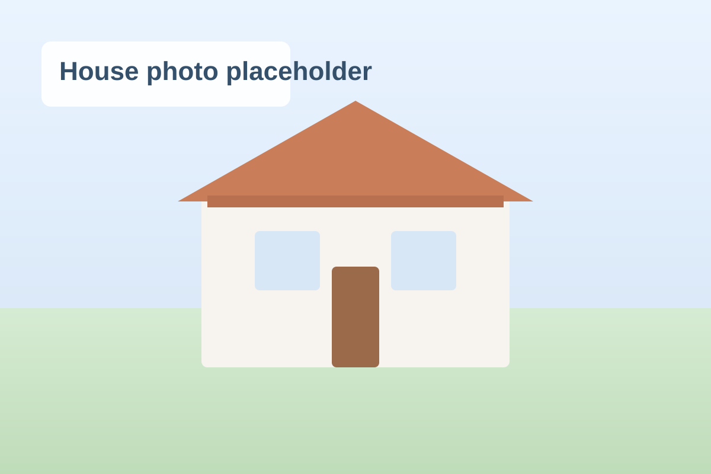

Östra järnvägsgatan 13
Moheda - May 2026
Upcoming move planned for 1 May.

Wieselgrensgatan
Växjö - Oktober 2025
Stayed here 5 months so far.

Långa gatan
Växjö - September 2025
Stayed here 1 month.

Falkgatan
Växjö - Oktober 2024
Stayed here 11 months.

Östra järnvägsgatan 13
Moheda - November 2022
Stayed here 23 months.
Ör 1
Ör - December 2021
Stayed here 11 months.

Östra järnvägsgatan 17
Moheda - September 2020
Stayed here 15 months.

Humlevägen
Torpsbruk - OKTOBER 2018
Stayed here 23 months.

Härlöv 2
Härlöv - ? 2017
Stayed here ~1 year.

Östra Järnvägsgatan 15
Torpsbruk - ? 2016
Stayed here ~1 year.

Kungsvägen 61
Växjö - ? 2015
Stayed here ~1 year.

Östra Järnvägsgatan 15
Torpsbruk - ? 2014
Stayed here ~1 year.
Bergsgatan
Moheda - ? 2013
